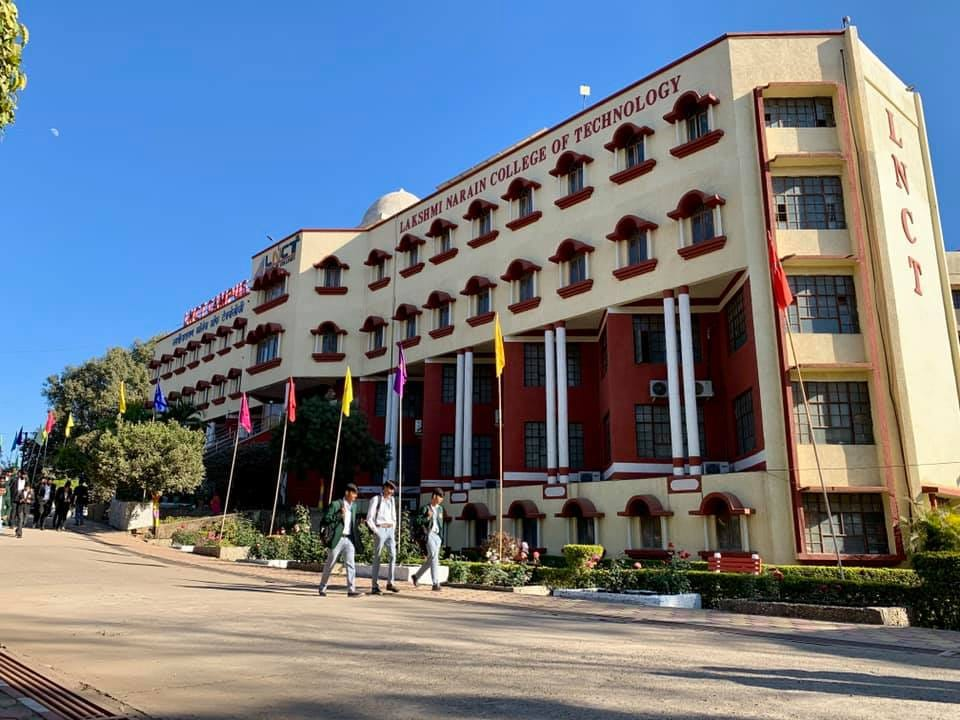
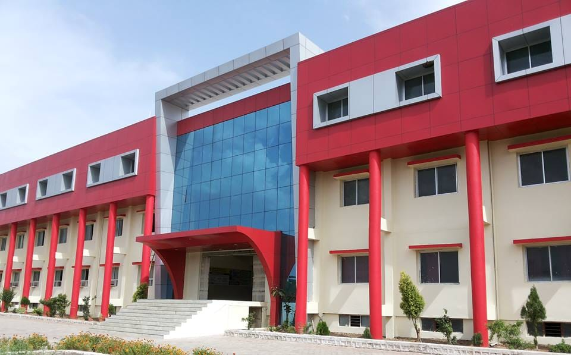
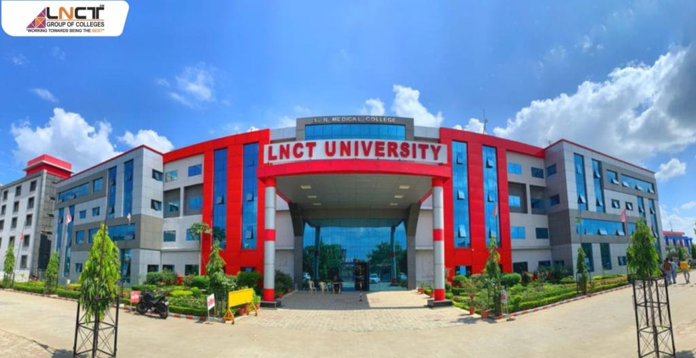
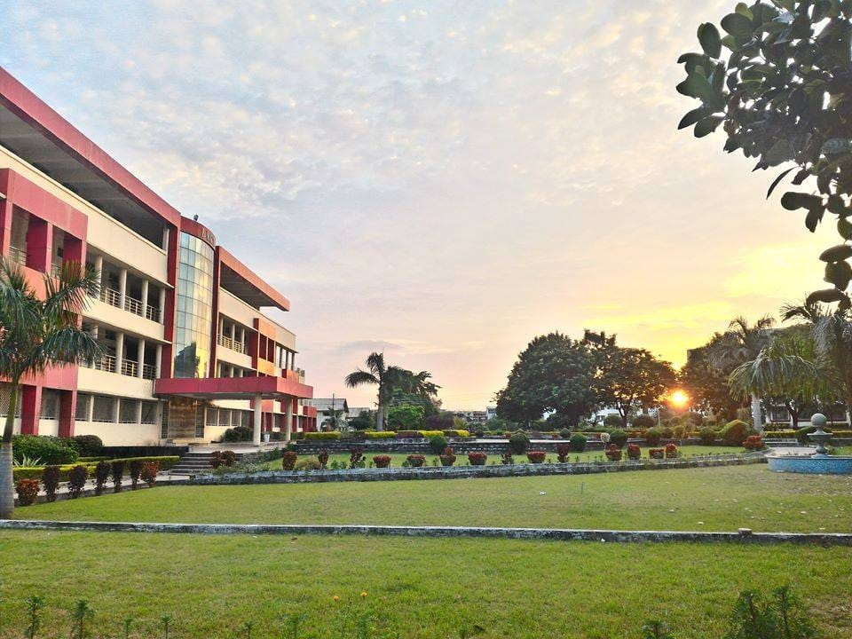
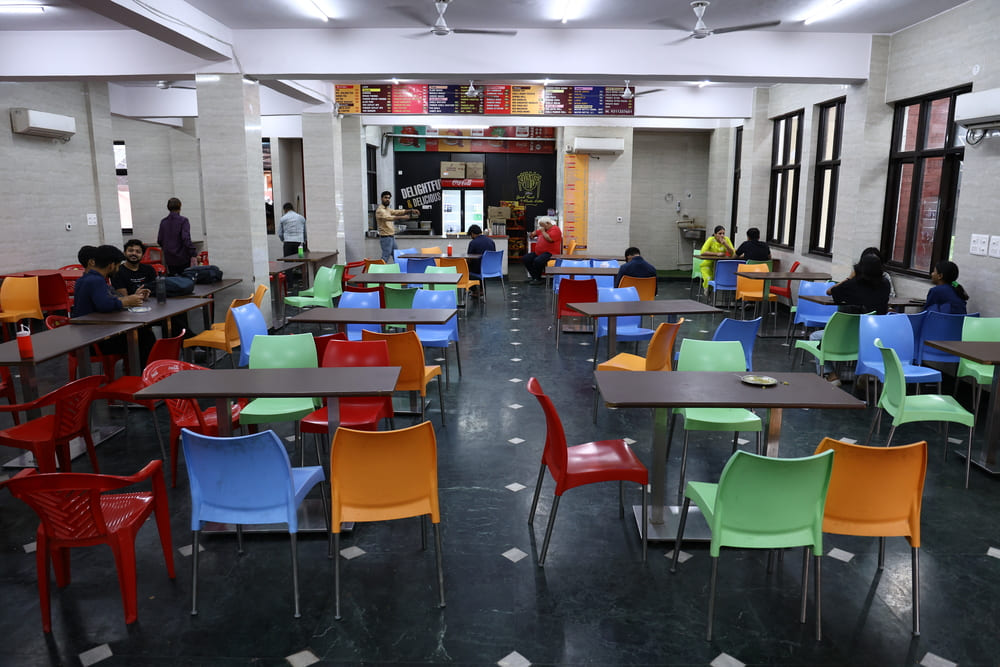

"Leading Engineering Education in MP"
Lakshmi Narain College of Technology (LNCT), Bhopal | Established in 1994 | Excellence in Technical Education.
REGISTER Admission Open 2026 - Apply NowLakshmi Narain College of Technology (LNCT), Bhopal | Established in 1994 | Excellence in Technical Education.
REGISTER Admission Open 2026 - Apply NowExplore a wide range of academic programs at Lakshmi Narain College of Technology (LNCT), Bhopal. Our courses combine theoretical knowledge with practical skills to prepare students for successful careers in engineering, technology, and management.
LNCT offers a variety of B.Tech programs designed to build strong technical foundations. Students gain hands-on experience, industry exposure, and innovative learning opportunities to become skilled engineers.
Our postgraduate programs focus on advanced technical knowledge, research, and innovation. LNCT provides students with the opportunity to specialize in various engineering fields and enhance their expertise.
LNCT also offers MBA programs that develop leadership, management, and entrepreneurial skills. Students learn modern business strategies and gain practical exposure to the corporate world.
Lakshmi Narain College of Technology (LNCT) has multiple campuses across Madhya Pradesh, providing quality education, modern infrastructure, and excellent learning environments for students.



LNCT Bhopal offers modern infrastructure, advanced laboratories, spacious libraries, sports facilities, and vibrant campus life to support academic excellence and student development.

LNCT provides a well-equipped central library with thousands of books, journals, and digital resources to support research and academic growth.

The LNCT campus offers a peaceful and green environment with modern academic buildings, open spaces, and facilities designed for effective learning.

LNCT cafeteria provides hygienic and delicious food options for students, creating a comfortable place to relax and socialize.
Hear from our students about their experiences at Lakshmi Narain College of Technology (LNCT), Bhopal. Their journey reflects the quality education, supportive environment, and opportunities that shape their future.
“Studying at LNCT Bhopal has been a great experience for me. The faculty members are supportive and the campus environment encourages learning and innovation.”
Abhijeet Kumar, B.Tech Computer Science.“LNCT provides excellent infrastructure and opportunities for students to grow academically and professionally. I feel proud to be a part of this institution.”
Abhay Singh, ECE Student"LNCT Bhopal provides a great learning environment with modern laboratories and experienced faculty. It helps students gain both technical knowledge and practical skills."
Aman Gupta, Civil Engineering“The campus environment at LNCT encourages innovation and teamwork. It is a great place to learn, grow, and build a successful career.”
Priya Singh, Information Technology“LNCT Bhopal provides a great learning environment with modern laboratories and experienced faculty. It helps students gain both technical knowledge and practical skills.”
Sneha Patel, Mechanical EngineeringLakshmi Narain College of Technology (LNCT), Bhopal is one of the leading engineering institutions in Madhya Pradesh. Established in 1994, LNCT is known for its quality education, experienced faculty, modern infrastructure, and excellent placement opportunities. The institute focuses on innovation, research, and practical learning to prepare students for successful careers in engineering and technology.
Made with by Abhijeet Kumar